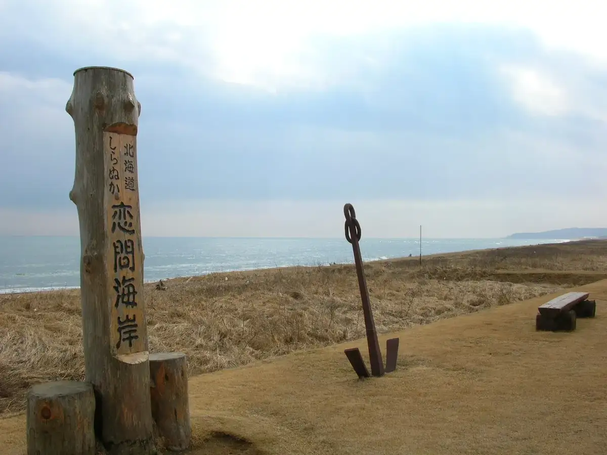
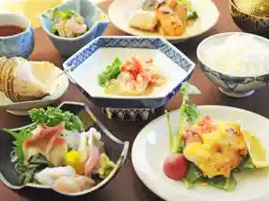
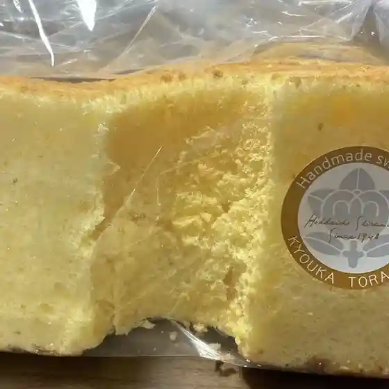
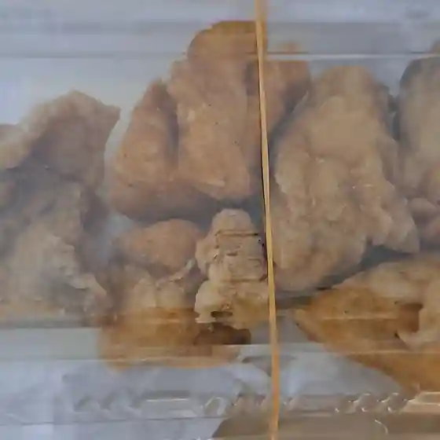
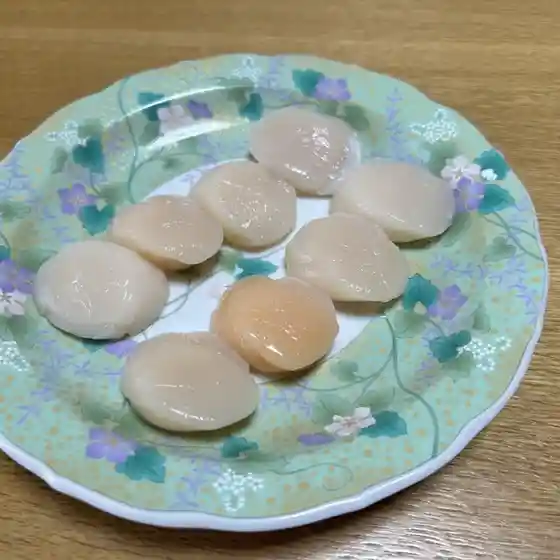
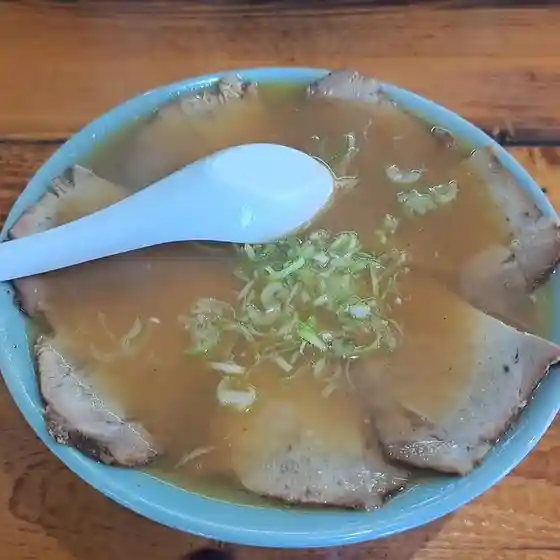
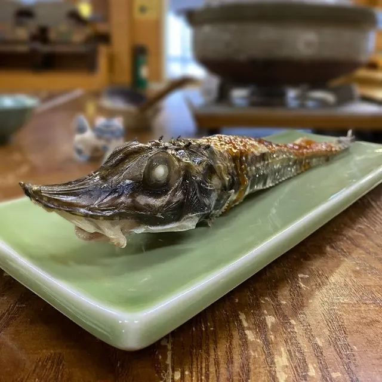
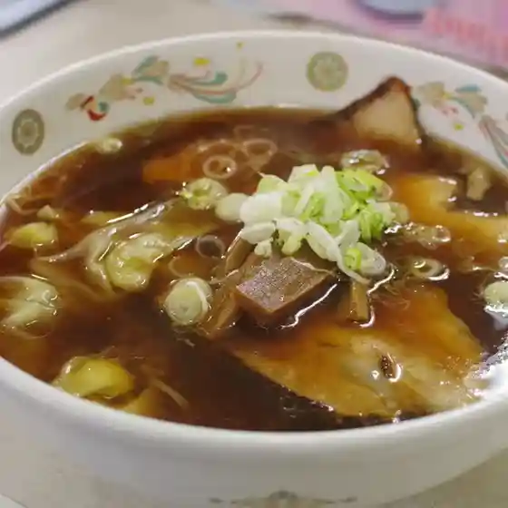

Shiranuka
Shiranuka · Hokkaido
Shiranuka
Highlighted on the Hokkaido map.

Stay
ホテルまつや

Hoteru Matsuya
Dining
とら信

Tora Shin
鳥せい 白糠店

Tori Sei Shiranuka Mise
さつき旅館

Satsuki Ryokan
お食事処花月

O Shokuji Tokoro Kagetsu
広洋水産

Kouyou Suisan
ラーメン大王

Raamen Daiou
やまかん

Yamakan
老麺 やはた

Raamen Yahata
驚きの森Labo
Odoroki No Mori Labo
東家
Azumaya
ドライブイン 紀文
Doraibuin Kibun
む～んらいと 西庶路店
Mu ~ Nraito Nishi Sho Michi Mise
ドライブインポポ
Doraibuinpopo
ラーメン 寳龍 恋問店
Raamen Houryuu Koi Ton Mise
大森水産
Oomori Suisan
CHAPEL
Chapel
レストラン はまなす
Resutoran Hamanasu
お肉の専門店 やまうち
O Niku No Senmonten Yamauchi
チーズ工房 酪恵舎
Chiizu Koubou Raku Megumi Sha
ろばた築路
Robata Chiku Michi
発酵スタジオ cip
Hakkou Sutajio Cip
居酒屋しん
Izakaya Shin
郷菓とら信
Sato Ka Tora Shin
エランドール
Erandooru